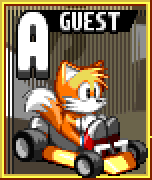

Character Select

Each character resides in one of the nine Engine Classes.
Characters near the center of the grid are all-rounders; characters closer to an edge are specialists, trading off between top speed (right edge), acceleration (left edge), weight (bottom edge), and handling (top edge). These qualities affect the way they drive, the way they fight, and their strategy in chaotic situations.
Almost every aspect of driving is affected by Engine Class, and they all have their own strengths and weaknesses. Try them all and find your favorite!
Engine Classes
 Class A (Upper Left): Slow, lightweight racers known for great handling, great acceleration, powerful ring boosts and long tethers. Play your situation and pick the right time to push!
Class B (Upper Center): Lightweight racers known for balanced stats, with good handling and long tethers. Keep a steady pace and stick to the competition!
Class C (Upper Right): Fast, lightweight racers known for the most powerful boost stacking, long tethers, and very low acceleration. Keep your momentum up at any cost!
Class D (Center Left): Slow, midweight racers with balanced ring and tether strengths. Focus on efficient cornering to keep the pressure on!
Class E (Dead Center): Midweight racers with no true strengths or weaknesses. Use everything at your disposal to find an edge!
Class F (Center Right): Fast, midweight racers with a balance of Drift Boosts and raw speed. Keep a cool head and focus on a tight racing line!
Class G (Bottom Left): Slow, heavyweight racers with great acceleration, fast-acting tethers, and the longest, strongest Drift Boosts. Blow the competition away with effective cornering!
 Class H (Bottom Center): Heavyweight racers with balanced stats, leaning towards stronger Drift Boosts. Don’t let anyone get in your way!
Class H (Bottom Center): Heavyweight racers with balanced stats, leaning towards stronger Drift Boosts. Don’t let anyone get in your way!
Class I (Bottom Right): Fast, heavyweight racers with very strong Drift Boosts. Leave your opponents in the dust—or die trying!
Speed and Weight
Each racer has two primary stats, Speed and Weight. Higher speed comes at the cost of lower acceleration, and higher weight comes at the cost of stricter turning angles. Heavier, slower racers also generate Drift Boosts faster.
Speed and Weight also affect a number of more subtle mechanics:
- Strength and length of ring boosts
- Amount of speed gained from boost stacking
- The difficulty of maintaining a tether link
- The amount of time it takes to reach max tether speed
- The amount of speed gained from a tether link
Experiment with each racer and see which play style works best for you!